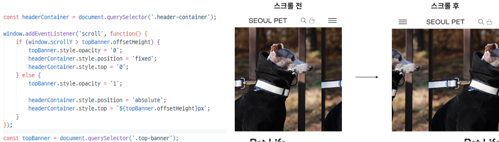
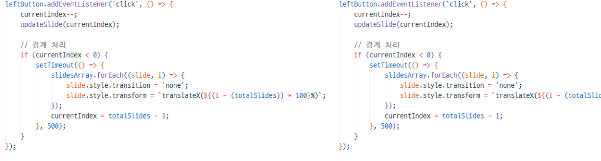
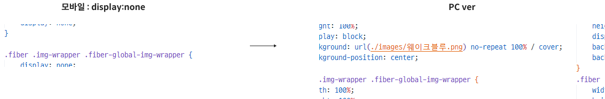

SEOULPET 반응형 웹
리디자인 & 퍼블리싱
SEOULPET Responsive Web Redesign & Publishing
100% 개인작업


SEOULPET Responsive Web Redesign & Publishing
100% 개인작업
서울펫은 반려동물으 위한 실용적이고 품질 높은 제품을합리적인 가격에 제공하며, 지속 가능한
후원을 지향하는 브랜드 입니다
이를 기본으로 기존의 깔끔한 디자인에 세련미를 더하고, 반응형 웹을 통해 사용자에게
최적화된 시각적 경험을 제공
선명한 선과 텍스트를 통해 브랜드 정체성을 전달하기 위해 제작
사용자의 인터랙션에 반응하는 요소들을 구현 이를 통해 사이트의
사용자 경험(UX)을 한층 개선하고, 더욱 직관적이고 흥미로운
환경을 제공
스크롤 이벤트를 활용하여 슬라이드 구성
메뉴 클릭 시 부드러운 스크롤 이동 기능을 추가
다양한 화면 크기에서 최적화된 사용자 경험을 제공하여,
모든 장치에서 일관된 디자인을 구현
이미지 슬라이더와 애니메이션 효과를 통해
컨텐츠 전환을 매끄럽게 제작
스크롤 시 헤더와 상단 배너가 겹치거나 부자연스럽게 동작하여 레이아웃과 사용자 경험이 저하
-> 스크롤 이벤트로 배너가 사라질 때 opacity를 0으로 설정하고, 헤더를 fixed로 고정해 화면 상단에 자연스럽게 전환되도록 함으로써 레이아웃 안정성과 사용자 경험을 개선
슬라이드가 끝에 도달했을 때, 슬라이드를 자연스럽게 반복하지 않고 갑자기 첫 번째 또는 마지막 슬라이드로 이동함.
-> 슬라이드가 끝에 도달했을 때 경계를 넘어서면 복제된 슬라이드로 이동하도록 setTimeout을 사용하여 애니메이션을 제거하고, 경계를 넘어간 후 정상적으로 다시 슬라이드가 전환되도록 구성
모바일과 PC에서 이미지의 표시 방식이 다르게 설정되어 있어 반응형으로 이미지가 제대로 표시되지 않았음
-> PC에서는 background-image를 사용하여 이미지를 배경으로 설정하고, background-size: cover;를 통해 크기와 위치를 화면 크기에 맞춰 자동 조정되도록 하였으며, 모바일에서는 <img> 태그로 실제 이미지를 표시하여 반응형으로 이미지가 적절히 조정
처음 반응형 웹디자인에 도전하면서 어려움과 막막함을 느꼈지만, 혼자서 이를 해결해 나가는 과정에서 자신감과 뿌듯함을 느꼈습니다.
특히, HTML 구조를 잡아가며 점차적으로 디자인에 대한 감을 익히고 수정할 부분을 발견하게 되면서 성장하는 기쁨을 경험했습니다.
기존 웹사이트의 이미지와 컨셉을 통일하는 것은 비교적 쉬웠으나, 이미지가 비슷한 느낌이 많아 독특한 포인트를 주는 데 어려움을 겪었습니다.
다양한 느낌을 주기 위해 여러 번 시도하고 수정하며, 디자인에 개성을 부여하는 데 많은 노력을 했습니다.
강아지를 좋아하는 만큼, 웹사이트 콘텐츠를 채워나가는 과정에서 즐거움을 느끼고 보람을 느꼈습니다.
힘든 과정 속에서도 좋아하는 주제로 작업하면서 만족감을 얻었고, 점점 더 많은 콘텐츠를 추가하고 싶은 욕심도 생겼습니다.